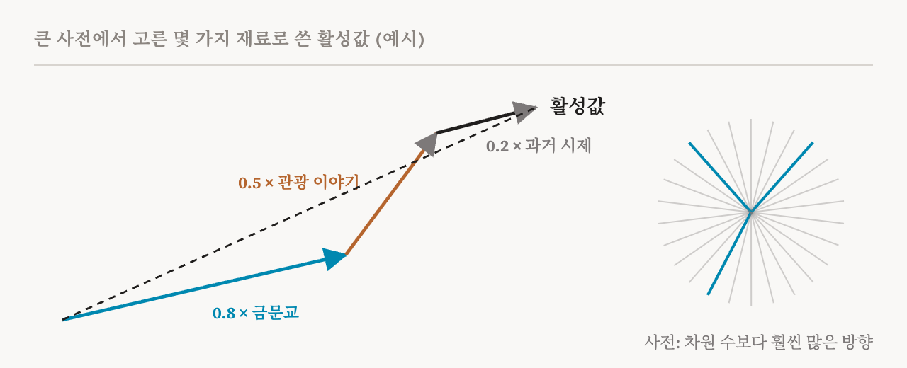
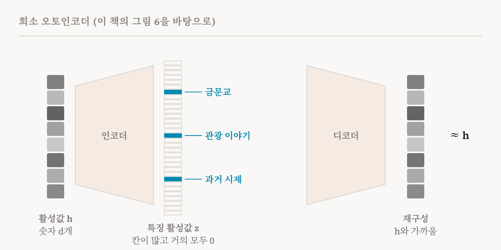

8편은 수수께끼 하나를 남겼습니다. 모델이 정말로 특징들에게 공간을 나눠 쓰게 해서 차원 수보다 훨씬 많은 특징을 담는다면, 특징을 뉴런에서 바로 읽어 낼 수는 없습니다. 어떻게든 떼어 내야 합니다. 이번 편은 특징 찾기 부를 시작합니다. 이 책 6장의 첫머리와 6.1절, 6.2절(31–34쪽)을 다룹니다. 오래된 문제인 희소 코딩(sparse coding)과, 그것을 이 분야의 주력 도구로 바꿔 놓은 희소 오토인코더(sparse autoencoder, SAE)입니다.
신경과학에서 온 아이디어
이 문제는 언어 모델보다 오래되었습니다. 1961년 신경과학자 호러스 발로(Horace Barlow)는 뇌가 희소한 신호로 정보를 표현한다고 제안했고, 이후 수십 년 동안 다른 연구자들이 이 생각을 발전시켰습니다. 어느 순간이든 쓸 수 있는 많은 단위 가운데 몇 개만 켜지고, 각각이 특정한 무언가를 나타낸다는 생각입니다. 1996년 브루노 올스하우젠(Bruno Olshausen)과 데이비드 필드(David Field)는 이 생각의 한 형태를 자연 이미지로 시험했습니다. 사진의 작은 조각 어느 것이든 그 가운데 몇 개만으로 다시 만들 수 있는 기본 이미지 조각들의 집합을 컴퓨터에게 찾게 했습니다. 컴퓨터가 찾아낸 조각들은 일차 시각 피질, 곧 눈이 본 것을 뇌에서 처음 처리하는 영역의 세포가 반응하는 영역과 놀라울 만큼 닮아 있었습니다. 작고 일정한 방향으로 놓인 윤곽선과 막대 모양이었습니다.
같은 시기에 신호 처리 분야의 연구자들도, 신호를 큰 모음에서 고른 몇 개의 기본 신호의 합으로 쓰는 방법과 더 나은 모음을 학습하는 방법을 연구하고 있었습니다. 이런 연구들이 함께 희소 딕셔너리 학습(sparse dictionary learning)이라는 문제를 정의했습니다. 희소 오토인코더는 신경망의 활성값을 신호로 삼아 이 문제를 푸는 현대적인 방법입니다.
희소 코딩 문제
아이디어는 간단히 말할 수 있습니다. 4편에서 본, 숫자 d개짜리 벡터인 활성값을 하나 가져옵니다. 그리고 활성 공간의 방향들의 긴 목록인 사전(dictionary)과, 활성값마다 하나씩 있는 가중치 목록인 코드(code)를 찾습니다. 활성값이 사전의 방향들을 코드의 가중치로 더한 것과 대략 같고, 가중치 가운데 0이 아닌 것은 몇 개뿐이도록 하는 것입니다.

물감 섞기를 떠올리면 됩니다. 벽에 칠한 어떤 색이든, 아주 큰 물감 상자에서 고른 몇 가지 안료로 맞출 수 있습니다. 상자가 사전이고, 한 색깔의 배합표, 곧 대부분 0이고 몇 가지만 양이 적힌 목록이 코드입니다. 이 설명에서 두 단어가 중요합니다. 사전은 과완비(overcomplete)입니다. 공간의 차원 수보다 항목이 훨씬 많다는 뜻으로, 바로 중첩이 요구하는 성질입니다. 그리고 코드는 희소합니다. 어떤 활성값이든 항목 거의 모두가 0입니다.
고전적인 방법은 활성값마다 작은 최적화 문제를 따로 풀어 코드를 찾습니다. 언어 모델의 수십억 개 활성값에 쓰기에는 너무 느립니다. 희소 오토인코더는 이 탐색을 학습된 지름길로 바꿉니다. 인코더라는 작은 신경망이 어떤 활성값이든 한 번에 코드를 예측합니다.
희소 오토인코더의 작동 방식
희소 오토인코더는 두 부분으로 되어 있습니다. 인코더(encoder)는 모델의 특정한 한 자리, 예를 들어 어떤 층의 MLP 출력이나 그 뒤의 잔차 스트림에서 가져온 활성값을, 훨씬 긴 특징 활성 벡터로 바꿉니다. 디코더(decoder)는 그 특징 활성값들을 원래 활성값과 같은 크기의 벡터, 곧 재구성(reconstruction)으로 되돌립니다. 특징의 수는 보통 활성값의 크기에 확장 계수(expansion factor)라는 정수를 곱한 값입니다. 확장 계수가 32라면, 숫자 4,096개짜리 활성값을 약 13만 1천 개의 후보 특징으로 설명합니다.

SAE는 많은 양의 텍스트에서 모델로부터 모은 활성값으로 학습하며, 학습에는 서로 반대로 당기는 두 목표가 있습니다. 각 활성값을 정확하게 재구성해야 하므로 원래 값과 재구성 사이의 오차가 작아야 합니다. 동시에 한 번에 적은 수의 특징만 써야 하므로 특징 활성값에 벌점이 붙습니다. 이 책은 목표를 재구성 오차에, 특징 활성값들의 절댓값의 합에 λ를 곱한 값을 더한 것으로 씁니다. λ는 희소성을 얼마나 강하게 요구할지 정합니다. 특징마다 하나씩 있는 디코더의 열은 활성 공간의 방향 하나이고, 그것이 사전에 실린 그 특징의 항목입니다.
기술적인 세부 두 가지
이 책은 지나치기 쉽지만 중요한 설계 선택 두 가지를 설명합니다.
첫째는 벌점입니다. 정말로 제한하고 싶은 것은 켜진 특징의 개수이고, 수학에서는 이를 L0 노름이라고 부릅니다. 하지만 개수 세기는 경사 하강법으로 학습하는 데 쓸모가 없습니다. 가중치를 조금 바꿔도 개수는 거의 바뀌지 않으므로, 어느 쪽으로 고쳐야 할지 신호를 주지 못합니다. 그래서 표준 SAE는 활성값 크기의 합인 L1 노름을 씁니다. L1 노름은 매끄럽게 변하고, 작은 활성값을 0 쪽으로 밉니다.
둘째, 디코더의 열은 보통 길이가 1로 고정됩니다. 이 규칙이 없으면 SAE가 꼼수를 쓸 수 있습니다. 모든 특징 활성값을 아주 작게 만들어 L1 벌점을 줄이고, 그 대신 디코더의 열을 아주 길게 만들어 재구성은 그대로 유지하는 것입니다. 그러면 실제로 더 희소해지지 않았는데도 벌점이 줄어듭니다. 디코더 열의 길이를 고정하면 이 빈틈이 막힙니다.
왜 통할 것이라 기대하는가
SAE는 7편과 8편의 두 가설 위에 서 있습니다. 선형 표현 가설은 활성값을 특징 방향들의 합으로 근사할 수 있다고 말합니다. 중첩 가설은 그런 방향이 차원 수보다 많으며 각각 드물게 쓰인다고 말합니다. 이 책은 여기서 희소성이 무엇을 뜻하는지 강조합니다. 어떤 토큰에서든 켜지는 특징이 몇 개뿐이라는 뜻이지, 활성값 자체에 0이 많다는 뜻이 아닙니다. 이 가설들이 성립한다면, 희소 딕셔너리 학습의 수십 년에 걸친 결과들은 그 구조를 과완비 사전으로 되찾을 수 있다는 꽤 믿을 만한 근거가 됩니다. SAE를 처음 언어 모델에 적용한 2023년과 2024년 연구들은 이런 논리에서 출발했고, 개별 뉴런보다 훨씬 단의적인 특징들을 찾았습니다. Anthropic이 2023년에 작은 모델로 한 연구에서는 DNA 염기 서열에 켜지는 특징, 아랍 문자에 켜지는 특징이 나왔습니다. 2024년에 대형 모델 Claude 3 Sonnet으로 한 연구에서는 금문교 특징이 나왔는데, 이 특징을 키우자 모델은 무엇을 묻든 금문교 이야기를 했습니다.
벡터에서 개념으로
SAE가 이름 붙은 개념 목록을 건네주는 것은 아닙니다. 활성값마다 SAE가 내놓는 것은 몇 개의 켜진 특징, 곧 숫자 하나와 방향 하나씩일 뿐입니다. 사람이 읽을 수 있는 것으로 바꾸려면 한 단계가 더 필요합니다. 실제로 SAE 특징은 여러 텍스트에 되풀이해 나타나는 토큰 패턴에 선택적으로 켜지는 것으로 밝혀졌습니다. 의미든, 기능이든, 어휘든 특정한 개념에 민감하다는 신호입니다. 그다음 자동화된 절차가 각 특징이 가장 강하게 켜지는 입력들을 모으고, 언어 모델에게 그 특징이 무엇을 포착하는지 추론하게 합니다. 이런 절차와 그 이름표를 얼마나 믿을 수 있는지는 33편에서 다룹니다.
학습과 평가
이 책은 SAE 학습이 까다롭다고 경고합니다. 결과는 가중치를 어떻게 초기화하는지, 희소성 벌점이 얼마나 강한지, 디코더를 어떻게 정규화하는지에 따라 달라집니다. 설정이 맞지 않으면 특징들이 무너지거나, 서로 중복되거나, 서로를 흡수할 수 있습니다. 이런 실패는 12편의 주제입니다.
SAE는 보통 세 가지로 평가합니다. 재구성 손실은 활성값을 얼마나 충실하게 다시 지었는지 잽니다. 특징 흡수는 일반적인 특징이, 더 구체적인 특징이 그 방향을 가져가 버린 탓에 켜지지 못하는 경우가 얼마나 잦은지 잽니다. 하위 손실 회복(downstream loss recovery)은 모델의 실제 활성값을 SAE의 재구성으로 바꿔 끼워도 모델이 여전히 잘 작동하는지 확인합니다. 분해가 모델이 실제로 쓰는 것을 지키고 있는지 시험하는 것입니다. 이 책은 이 세 가지를 함께 보면 분해의 품질과, 그 분해가 모델의 계산에 얼마나 관련 있는지를 함께 평가할 수 있다고 말합니다.
이 책의 실습 노트북은 기본 SAE를 처음부터 만들고, 11편에서 다룰 변형 두 가지와 함께 학습시켜 비교합니다.
| 용어 | 뜻 |
|---|---|
| 희소 코딩 | 신호를 큰 모음에서 고른 몇 개의 요소의 가중합으로 쓰는 것 |
| 사전 | SAE가 학습하는 방향들의 집합. 특징마다 하나씩, 디코더의 열로 저장됨 |
| 과완비 | 사전의 항목이 공간의 차원 수보다 많은 것 |
| 코드 | 입력 하나에 대한 특징 활성값의 목록. 대부분 0 |
| 희소 오토인코더(SAE) | 켜진 몇 개의 특징으로 활성값을 다시 짓도록 학습한 인코더와 디코더 |
| 인코더 | 활성값을 특징 활성값으로 바꾸는 부분 |
| 디코더 | 특징 활성값을 다시 활성값으로 바꾸는 부분 |
| 확장 계수 | SAE의 특징 수가 차원 수의 몇 배인지 |
| 재구성 | SAE가 다시 지은 활성값 |
| L0 노름 | 벡터에서 0이 아닌 항목의 개수 |
| L1 노름 | 벡터 항목들의 절댓값의 합. L0 대신 매끄럽게 쓰는 값 |
| λ(람다) | 희소성을 얼마나 강하게 요구할지 정하는 설정 |
| 하위 손실 회복 | 활성값을 재구성으로 바꿔 끼워도 모델이 잘 작동하는지 |
11편에서는 표준 SAE의 가장 큰 약점을 고친 변형들과, 그 가운데 무엇을 고를지를 살펴봅니다.